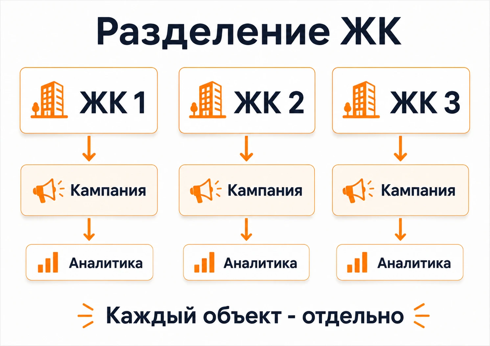

Яндекс Директ для интернет-магазина: как настроить рекламу на продажи
Как настроить Яндекс Директ для интернет-магазина: товарные кампании, фид, Метрика, стратегии, ДРР, РСЯ и реальные примеры продвижения e-commerce.
Блог о платном трафике
Разбираю рекламу простым языком: как устроен Яндекс Директ, за что уходит бюджет и что смотреть в отчетах, чтобы реклама приносила заявки.
Как настроить Яндекс Директ для интернет-магазина: товарные кампании, фид, Метрика, стратегии, ДРР, РСЯ и реальные примеры продвижения e-commerce.
Как настроить Яндекс Директ для коммерческой недвижимости: Поиск, РСЯ, сегментация объектов, посадочные страницы, аналитика и реальный кейс со снижением стоимости лида.
Как настроить Яндекс Директ для строительства домов: поиск, РСЯ, семантика, посадочная страница, аналитика, квалификация лидов и реальные кейсы.
Как настроить Яндекс Директ для застройщика: структура кампаний, реклама ЖК, аналитика, работа с лидами, типичные ошибки и реальные кейсы.
Как настроить Яндекс Директ для строительной компании: поиск, РСЯ, посадочные страницы, аналитика, квалификация лидов и реальные примеры рекламных проектов.
Как настроить Яндекс Директ для онлайн-школы: Поиск, РСЯ, воронки, посадочные страницы, аналитика, оптимизация и реальные кейсы образовательных проектов.
Как настроить Яндекс Директ для недвижимости: Поиск, РСЯ, сегментация объектов, посадочные страницы, аналитика и реальные кейсы.
Как разделить рекламу недвижимости по направлениям, работать с Поиском и РСЯ, оценивать качество заявок и связывать рекламу с продажами.
Читать статьюКак настроить рекламу жилого комплекса в Яндекс Директ: поиск, РСЯ, семантика, посадочные страницы, аналитика и реальные кейсы продвижения недвижимости.
Как рекламировать строительную компанию и получать целевые заявки: Яндекс Директ, Поиск, РСЯ, сайт, аналитика и работа с лидами.
Как настроить рекламу недвижимости в Яндекс Директ: Поиск, РСЯ, посадочные страницы, аналитика, качество лидов и реальные кейсы.
Как рекламировать школу массажа и привлекать учеников: Яндекс Директ, Поиск, РСЯ, сегментация курсов, посадочные страницы, аналитика и реальные кейсы.

Как рекламировать квартиры в новостройке через Яндекс Директ: Поиск, РСЯ, посадочные страницы, аналитика, сегментация ЖК и реальные кейсы по недвижимости.
Как настроить рекламу интернет-магазина в Яндексе: товарные кампании, ЕПК, фид, поиск, РСЯ, аналитика, ДРР и реальные примеры рекламы интернет-магазинов.
Как рекламировать коммерческие помещения через Яндекс Директ и другие каналы: работа со спросом, посадочная страница, аналитика и реальный кейс.